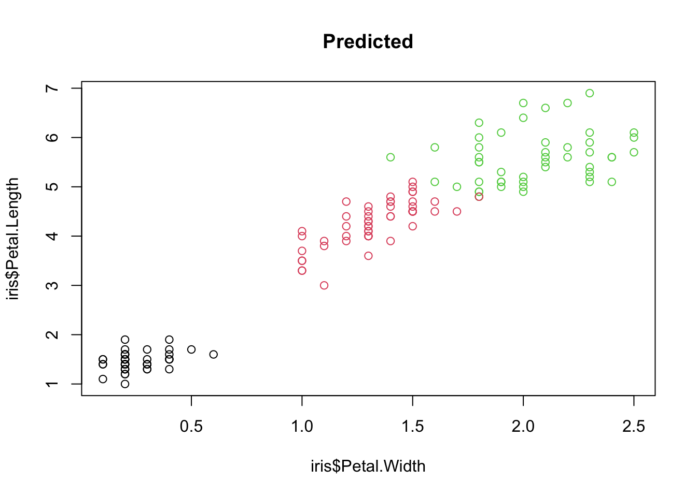

Machine Learning (ML) is about training an algorithm that can perform certain tasks. The general steps to get the trained model include:
Get some data (observations/training data)
Establish something that should be done with such data (= task)
Find an (ML) algorithm that can perform the task
Operationalize the goal by an error metric (=loss) that is to be minimized
Train the algorithm to achieve a small loss on the data
Test the performance of the algorithm
Example
data = airquality
predict Ozone
algorithm = lm
loss = residual sum of squares
m = lm(Ozone ~ ., data = airquality)
could predict(m) to data or hold-out
The goal of this course is that you can answer the following questions:
What are tasks that we can tackle?
What algorithm exist and how can they be set up / tuned / modified?
How to define the loss and wow to best train the algorithms?
How to do the performance evaluation
2.1 Machine Learning Tasks
Typically we can define roughly three types of ML tasks:
Supervised learning
Unsupervised learning
Reinforcement learning
Supervised learning, you train algorithms to predict something (classes = classification or values = regression) from some other data (= features), and you provide it with correct examples of the execution of the task (called training data). A linear regression is an example of supervised learning. Given \(y = f(x)\) with \(x\) our input feature (e.g. precipitation), \(y\) our response (growth), and \(f\) an unknown function that maps \(x \rightarrow y\) . The goal of supervised learning is to train a ML algorithm to approximate \(f\) given observed \((x_i, y_i)\) pairs.
Unsupervised learning, on the other hand, is when you provide the features, but no examples of the correct execution of the task. Clustering techniques are examples of unsupervised learning. (In the example above, \(y\) would be unknown).
Reinforcement learning is a technique that mimics a game-like situation. The algorithm finds a solution through trial and error, receiving either rewards or penalties for each action. As in games, the goal is to maximize the rewards. We will talk more about this technique on the last day of the course.
For now, we will focus on the first two tasks, supervised and unsupervised learning (here a YouTube video explaining again the difference).
2.1.1 Test questions
In ML, predictors (or the explaining variables) are often called features:
In supervised learning the response (y) and the features (x) are known:
In unsupervised learning, only the features are known:
In reinforcement learning an agent (ML model) is trained by interacting with an environment:
Have a look at the two textbooks on ML (Elements of statistical learning and introduction to statistical learning) in our further readings at the end of the GRIPS course - which of the following statements is true?
2.2 Unsupervised Learning
In unsupervised learning, we want to identify patterns in data without having any examples (supervision) about what the correct patterns / classes are. As an example, consider the iris data set. Here, we have 150 observations of 4 floral traits:
iris = datasets::iriscolors =hcl.colors(3)traits =as.matrix(iris[,1:4])species = iris$Speciesimage(y =1:4, x =1:length(species) , z = traits,ylab ="Floral trait", xlab ="Individual")segments(50.5, 0, 50.5, 5, col ="black", lwd =2)segments(100.5, 0, 100.5, 5, col ="black", lwd =2)
Trait distributions of iris dataset
The observations are from 3 species and indeed those species tend to have different traits, meaning that the observations form 3 clusters.
pairs(traits, pch =as.integer(species), col = colors[as.integer(species)])
However, imagine we don’t know what species are, what is basically the situation in which people in the antique have been. The people just noted that some plants have different flowers than others, and decided to give them different names. This kind of process is what unsupervised learning does.
2.2.1 K-means Clustering
An example for an unsupervised learning algorithm is k-means clustering, one of the simplest and most popular unsupervised machine learning algorithms (see more on this in section “distance based algorithms”).
To start with the algorithm, you first have to specify the number of clusters (for our example the number of species). Each cluster has a centroid, which is the assumed or real location representing the center of the cluster (for our example this would be how an average plant of a specific species would look like). The algorithm starts by randomly putting centroids somewhere. Afterwards each data point is assigned to the respective cluster that raises the overall in-cluster sum of squares (variance) related to the distance to the centroid least of all. After the algorithm has placed all data points into a cluster the centroids get updated. By iterating this procedure until the assignment doesn’t change any longer, the algorithm can find the (locally) optimal centroids and the data points belonging to this cluster. Note that results might differ according to the initial positions of the centroids. Thus several (locally) optimal solutions might be found.
The “k” in K-means refers to the number of clusters and the ‘means’ refers to averaging the data-points to find the centroids.
A typical pipeline for using k-means clustering looks the same as for other algorithms. After having visualized the data, we fit a model, visualize the results and have a look at the performance by use of the confusion matrix. By setting a fixed seed, we can ensure that results are reproducible.
Elbow technique to determine the probably best suited number of clusters:
set.seed(123)getSumSq =function(k){ kmeans(traits, k, nstart =25)$tot.withinss }#Perform algorithm for different cluster sizes and retrieve variance.iris.kmeans1to10 =sapply(1:10, getSumSq)plot(1:10, iris.kmeans1to10, type ="b", pch =19, frame =FALSE,xlab ="Number of clusters K",ylab ="Total within-clusters sum of squares",col =c("black", "red", rep("black", 8)))
Often, one is interested in sparse models. Furthermore, higher k than necessary tends to overfitting. At the kink in the picture, the sum of squares dropped enough and k is still low enough. But keep in mind, this is only a rule of thumb and might be wrong in some special cases.
Information criteria such as AIC or BIC can be also used to select the number of clusters and control complexity.
2.3 Supervised Learning
The two most prominent branches of supervised learning are regression and classification. The basic distinction between the two is that classification is about predicting a categorical variable, and regression is about predicting a continuous variable.
2.3.1 Regression
The random forest (RF) algorithm is possibly the most widely used machine learning algorithm and can be used for regression and classification. We will talk more about the algorithm later.
For the moment, we want to go through a typical workflow for a supervised regression: First, we visualize the data. Next, we fit the model and lastly we visualize the results. We will again use the iris data set that we used before. The goal is now to predict Sepal.Length based on the information about the other variables (including species).
The randomForest can be used similar to a linear regression model, we can specify the features using the formula syntax (~. means that all other variables should be used as features):
m1 =randomForest(Sepal.Length ~ ., data = iris) # ~.: Against all others.print(m1)
Call:
randomForest(formula = Sepal.Length ~ ., data = iris)
Type of random forest: regression
Number of trees: 500
No. of variables tried at each split: 1
Mean of squared residuals: 0.1364625
% Var explained: 79.97
In statistics we would use a linear regression model:
mLM =lm(Sepal.Length~., data = iris)
As many other ML algorithms, the RF is not interpretable, so we don’t get coefficients that connect the variables to the response. But, at least we get the variable importance which is similar to an anova, telling us which variables were the most important ones:
varImpPlot(m1)
Our liner model would report linear effects, however, the lm cannot keep up with the flexibility of a random forest!
To understand the structure of a random forest in more detail, we can use a package from GitHub.
reprtree:::plot.getTree(m1, iris)
Here, one of the regression trees is shown.
2.3.2 Classification
With the random forest, we can also do classification. The steps are the same as for regression tasks, but we can additionally see how well it performed by looking at the confusion matrix. Each row of this matrix contains the instances in a predicted class and each column represents the instances in the actual class. Thus the diagonals are the correctly predicted classes and the off-diagonal elements are the falsely classified elements.
Fitting the model (syntax is the same as for the regression task):
set.seed(123)library(randomForest)m1 =randomForest(Species ~ ., data = iris)print(m1)
Call:
randomForest(formula = Species ~ ., data = iris)
Type of random forest: classification
Number of trees: 500
No. of variables tried at each split: 2
OOB estimate of error rate: 4.67%
Confusion matrix:
setosa versicolor virginica class.error
setosa 50 0 0 0.00
versicolor 0 47 3 0.06
virginica 0 4 46 0.08
plot(iris$Petal.Width, iris$Petal.Length, col = iris$Species, main ="Observed")
plot(iris$Petal.Width, iris$Petal.Length, col =predict(m1), main ="Predicted")

Visualizing one of the fitted models:
reprtree:::plot.getTree(m1, iris)
Confusion matrix:
setosa
versicolor
virginica
setosa
50
0
0
versicolor
0
47
4
virginica
0
3
46
2.4 Exercise - Supervised Learning
Using a random forest on the iris dataset, which parameter would be more important (remember there is a function to check this) to predict Petal.Width?
Task: Fit random forest
A demonstration with the iris dataset:
library(randomForest)# scale your features if possible (some ML algorithms converge faster with scaled features)iris_scaled = irisiris_scaled[,1:4] =scale(iris_scaled[,1:4])model =randomForest(Species~., data = iris_scaled)
RandomForest is not based on a specific data generating model and thus we will not get effect estimates that tell us how the input features affect the response:
# no summary method availableprint(model)
Call:
randomForest(formula = Species ~ ., data = iris_scaled)
Type of random forest: classification
Number of trees: 500
No. of variables tried at each split: 2
OOB estimate of error rate: 4%
Confusion matrix:
setosa versicolor virginica class.error
setosa 50 0 0 0.00
versicolor 0 47 3 0.06
virginica 0 3 47 0.06
The confusion matrix explains where (for which species) the model makes wrong predictions / classifications on the OOB splits (OOB = out of bag). Each tree in the random forest is trained on a bootstrap of the data (bootstrap = sample with replacement from the original data, on average, each bootstrap will have 66% of the original data). Observations not used in a specific bootstrap are then used to validate the specific tree, bootstrap errors are at the end averaged for the n trees in the random forest.
While we don’t get effect estimates as in a lm, we get the variable importance which reports how important the specific predictors are:
predict Sepal.Length instead of Species (classification -> regression)
Plot predicted vs observed (usually used to asses the goodness of the predictions, if the model is good, predicted and observed values should be on one diagonal line)
Regression:
Random Forest automatically infers the type of the task, so we don’t have to change much:
model =randomForest(Sepal.Length~., data = iris_scaled)
The OOB error is now “% Var explained” which is very similar to a \(R^2\):
print(model)
Call:
randomForest(formula = Sepal.Length ~ ., data = iris_scaled)
Type of random forest: regression
Number of trees: 500
No. of variables tried at each split: 1
Mean of squared residuals: 0.2031826
% Var explained: 79.55